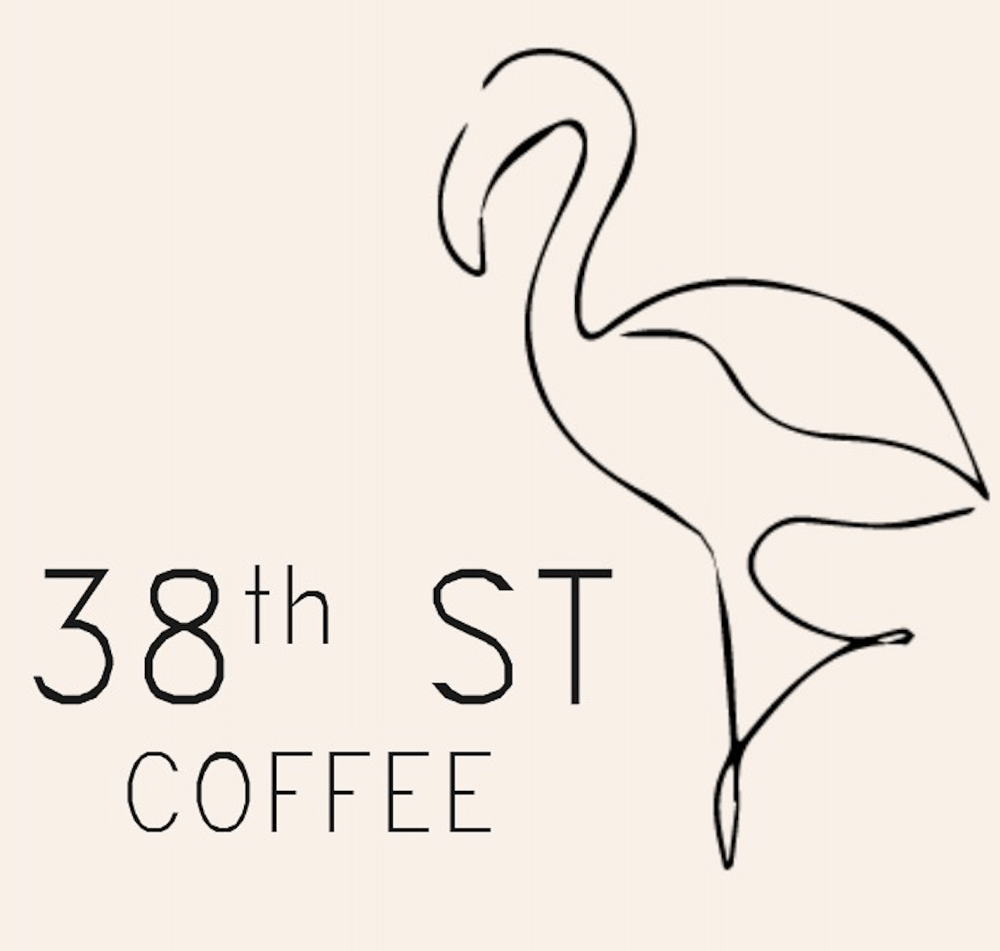

Thank you so much for your love and support! We’re an artisan home roastery focused on single-origin coffees. Every bag is roasted to order — choose your roast level every time ❤️
Fresh roasted-to-order single-origin coffee for pickup in Baltimore (21211). Order via Instagram DM or text — coffee flights available.
New: Coffee Flights — 4 × 3 oz of our selection of beans for $24.
These beans are not currently in the active lineup, but may come back later.
| Coffee | Roast | Process | Tools | Flavor Profile | Taste Notes | Availability | Price | Bag | Origin |
|---|